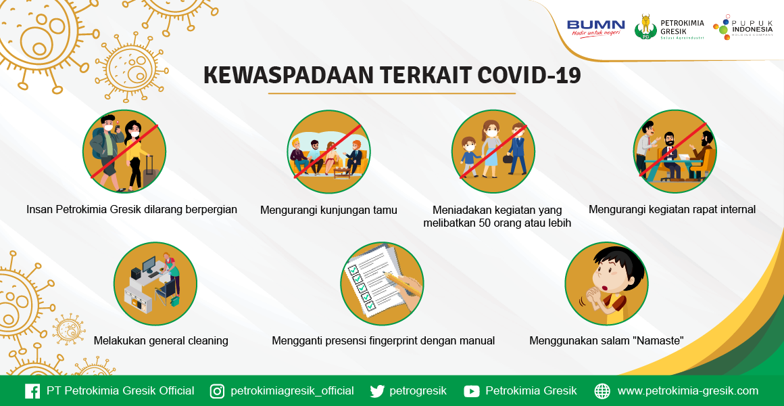

- Apakah Covid 19 itu?
Coronavirus adalah kumpulan virus yang bisa menginfeksi sistem pernapasan. Pada banyak kasus, virus ini hanya menyebabkan infeksi pernapasan ringan, seperti flu. Namun, virus ini juga bisa menyebabkan infeksi pernapasan berat, seperti infeksi paru-paru (pneumonia).
- Apa alasan mengapa Virus corona sangat mematikan?
- Bisa Menipu Tubuh
- Menular Dengan Cepat
- Menyebabkan efek yang tak terduga pada tubuh
- Asal Covid19?
WHO menegaskan hingga saat ini sumber pasti COVID19 belum pasti diketahui, tim peneliti masih melakukan investigasi, namun dicurigai kemungkinan besar virus ini berasal dari hewan.
- Apa Saja gejala Covid19?
- Demam
- Sesak Napas
- Nyeri Dada
- Batuk
- Mata Merah
- Gangguan Kognitif
- Kelelahan
- DLL
Menjaga Jarak
Memakai Masker
Mencuci Tangan
Tetap Waspada
Tetap Menjaga Kesehatan